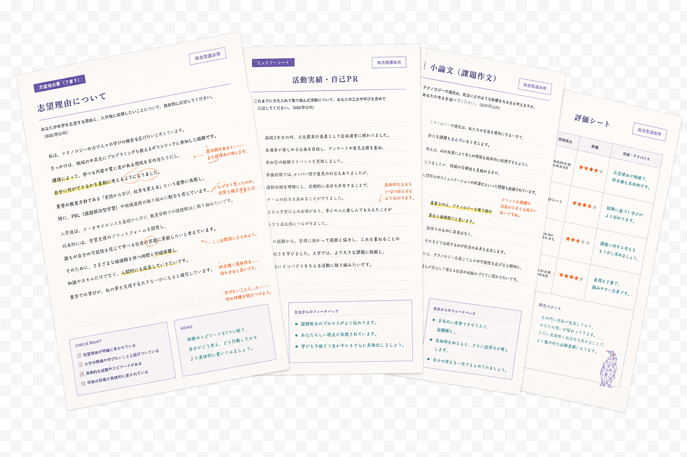
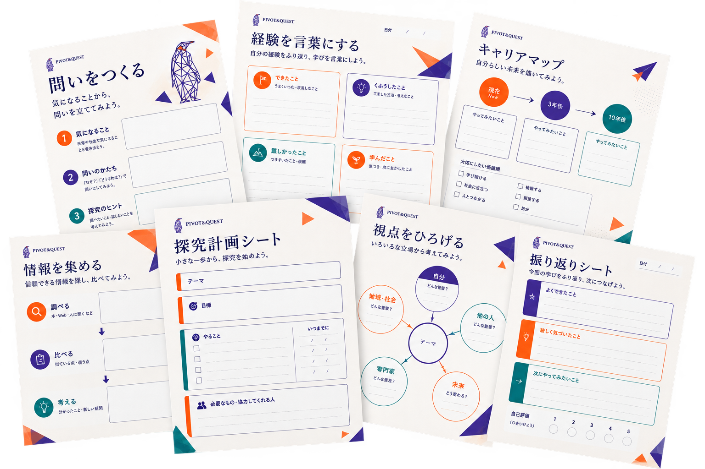
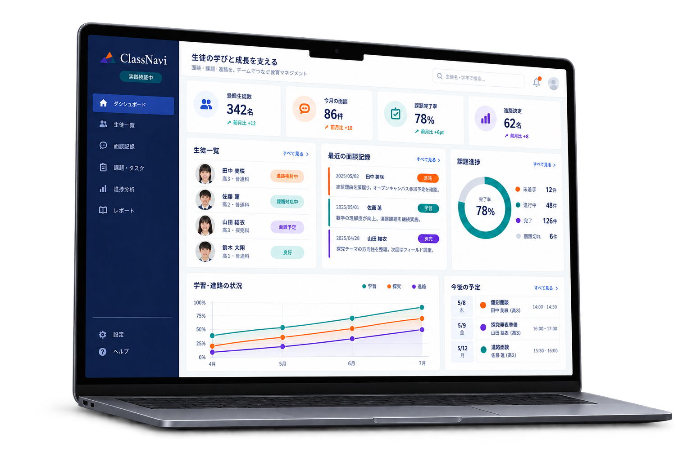

01一人に向き合う
経験や価値観を言葉にし、学ぶ理由と進路を一緒に考える。
中心にあるのは、いつも教育現場です。
経験や価値観を言葉にし、学ぶ理由と進路を一緒に考える。
伴走の方法を、探究授業、キャリア教育、教科へ展開する。
現場で見えた課題を、先生や関係者とともに教育システムへ変える。
私たちは、探究、自己分析、進路支援、文章表現、学校支援、業務改善、制作、システム開発まで横断して支援しています。その土台にあるのは、総合型選抜対策専門塾 Lighthouse の運営、探究授業、進路指導という教育現場の実務です。現場で見えてきた課題を、必要に応じて制作、仕組み化、システム開発へと展開しています。
総合型選抜、探究授業、学校支援、制作、業務改善、システム開発。一見すると別々の事業ですが、共通しているのは、問いを起点に言葉を整え、学びや社会との接点を見つけ、選択と行動につなげることです。
Education Support
その人にしか語れない言葉を、
一緒に見つける。
自己分析から志望理由書、小論文、面接、進路選択まで、一人ひとりに伴走します。
LIGHTHOUSEを見る

Education Systems
伴走の質を、
一人の力に依存させない。
面談、指導、評価、進路の情報を整理し、生徒と向き合う時間を伸ばします。
学習システムを見る
総合型選抜対策専門塾 Lighthouse を中心に、自己分析、志望理由書・小論文の指導、面接対策、探究学習支援、伴走型メンタリングを行います。
生徒の想いをそのまま形にするのではなく、その想いがどんな問いにつながり、どの学問と関係し、どんな社会課題や仕事と接続するのかまで深めます。合格だけをゴールにせず、自分の選択に納得できる進路を支援します。
Lighthouse を見る →探究授業の設計、キャリア教育、問いの立て方に関する授業、文章表現講座、教育プログラム開発、学校運営支援。
問いを立てること自体を目的にせず、社会との接点、教科学習との接続、学ぶ理由の発見までを重視します。
教育現場の運営負荷を下げ、先生や講師が生徒と向き合う時間を増やすための仕組みをつくります。
ClassNavi学校・塾向けの運営支援システム。自社の教育現場で実践導入し、検証しながら改善しています。
Scholar Compass生徒一人ひとりの学習状況・探究の進捗・面談内容を整理し、伴走支援の質を高める進捗管理システム。
業務改善、仕組み化、採用・営業支援、人材育成・研修設計、資料作成、AI活用支援まで。現状の課題を伺い、整理から実装まで一貫して伴走します。まずはお気軽にご相談ください。
誰に、何を、なぜ伝えるのかを整理したうえで、Web、LP、動画、資料へ落とし込みます。言語化した価値を「伝わる形」にする支援です。
84/94件
総合型選抜の合格支援(2022〜2026)
6年連続
慶應義塾大学SFC 合格者を輩出
4.93
外部口コミ評価(83件)
250名
規模の教育現場を運営・授業設計
40名
大学生チューター組織の育成・マネジメント
160人
規模の探究授業を企画・実施
早慶、国公立、海外大学まで幅広く対応。公営塾、個人塾、学校外部組織など、複数の教育現場での指導・運営・マネジメント経験をもとに支援しています。
Failure till it make it.
教育とは、失敗しない道を教えることではない。
大ケガしない転び方と、何度でも選び直す力を育てることだ。

田邊勇人
代表取締役 / Founder
複合的な教育現場で、たくさんの失敗をしてきました。その経験があるからこそ、生徒一人ひとりを信じて伴走したい。何度でも選び直せる教育の仕組みを、現場からつくっています。
公営塾、個人塾、学校外部組織など複数の教育現場で、指導、授業設計、運営、マネジメントを経験。生徒約250名・大学生チューター約40名規模の教育現場の運営を担い、160人規模の探究授業を企画・実施。
生徒の想いや関心を大切にしながら、それを学問、研究、仕事、社会との接点まで深めることを重視。まだ整理されていない問いや課題を言葉にし、授業、資料、Web、動画、仕組みへ変えることを続けている。
公式ノートでは、教育や自己探究、人生の構造化に関する知見を発信中。
進路のこと、学校のこと、仕組みのこと。
まだ整理されていないご相談も、歓迎します。